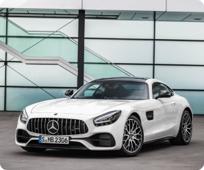
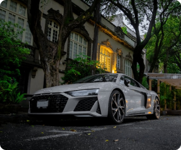
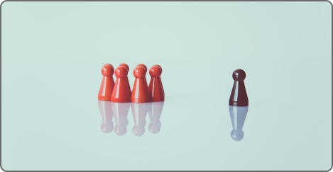
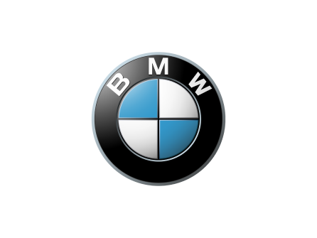
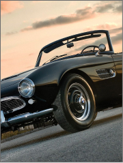
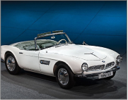
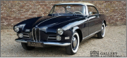
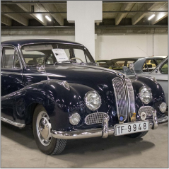
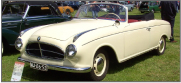
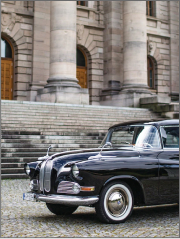

У світі боротьба з конкурентами перейшла новий рівень. Тепер головна зброя – МАРКЕТИНГ !
Audi, BMW та Mercedes вже багато років змагаються на цьому полі бою. Боротьба дає свої плоди.
Так, у 2016 році Mercedes вперше за десяток років обійшов BMW з продажів у бізнес сегменті.
Рахунок проданих авто Mercedes перестрибнув мільйонну позначку, в той час як показник BMW склав 980
000,
на третій позиції знаходиться Audi з показником 950 тис.
-

Mercedes History
-
 BMW History
BMW History -

AUDI History

Саме ці бренди затвердили за собою постійне лідерство та утримують
його
впевнено, незважаючи на величезну кількість інших брендів у преміум-класі.
Західнонімецькі бренди випускають авто в одній ніші. Як тільки один із брендів випускає
прем'єрну
модель – інші його наздоганяють, випускаючи конкуруючу свою версію.
При
цьому авто присвоюються дуже схожі характеристики та вдосконалюється дизайн.


Усі три виробника вважають саме свою модель еталоном та проривом
технічних
можливостей. Щоб виділитися серед конкурентів акцент робиться на магнетизм самого бренда.
1
Mercedes-Benz
Mercedes-Benz
Карл Бенц – винахідливий інженер першим запатентував
авто з бензиновим двигуном ще 1886 року. В 1926 в результаті
об'єднання виробників Daimler і Benz з'явилася відома до цього
дня компанія Mercedes-Benz.
Зірка на капоті символізує три стихії: землю – автомобіль,
повітря – авіаційні двигуни, вода – суднові двигуни.
Усе це відбувалося у концерні.
Основним фактором для виходу в лідерство для
«Трипроменевого» концерну стало те, що серед уряду автомобіль
користувався високою популярністю.
Період другої світової компанії пережив нелегко,
але виробництво було відновлено вже через рік після
закінчення війни. А в 50-х роках Mercedes був представлений
на F-1, а також почав випускати люкс-лімузини повністю ручного складання.
У 1998 році компанія купила Крайслер, сподіваючись піти на розширення, але
фінансова ситуація змусила продати акції в 2008 році, на цьому співпраця закінчилася. Лідерство
на ринку Мерседес обіймав до 2005 року. Керівництво компанії визначило завдання завоювати
колишні позиції до 2020 року.

Трикінцева зірка відома у споживача, це дає можливість не використовувати фото Мерседеса в
рекламі. Активне використання тільки шильдика в рекламних кампаніях почалося в 2011 році,
тоді в
аеропорту Йоганнесбурга була вивішена реклама зі слоганом на простому білому тлі «Краще чи
нічого» та піктограмою Mercedes-Benz.

Реклама ознаменувала випуск нової технології технології, здатної знизити витрати шкідливих домішок,
що викидаються у повітря.
У тому ж році вийшла промо-кампанія «Ліва та права півкулі мозку», яка говорила про інноваційність
технологій та витримку впізнаваного дизайну.
Незвичайним стрітборд робило те, що з часом забруднення на щиті вимальовувався напис «Якби більше
машин мали BlueEFFICIENCY, ви не змогли б це прочитати».

2
BMW
BMW
Bayerische (Баварський) Motoren (Моторний) Werke (Завод) всім відомий як BMW,
був запущений у 1916 році та виробляв авіаційні агрегати.

Значок БМВ відображає два значення: символічний пропелер на тлі
неба
і головні кольори прапора Баварії.
-
 Aвіадвигун BMW 801
Aвіадвигун BMW 801 -
 Перший мотоцикл BMW R32
Перший мотоцикл BMW R32 -
 Перший автомобіль BMW DiXi 1928
Перший автомобіль BMW DiXi 1928 -

Після закінчення 1-ої світової війни випуск авіадвигунів був припинений, і
компанія БМВ почала випускати мотоцикли, а перша автомобільна модель зійшла з конвеєра в 1928
році і
називалася Dixi.
У період Другої світової війни BMW був повністю перетворений на виробника
літакових двигунів. Після поразки Німеччини виробництво перестало бути необхідним. BMW вийшла на
ринок з авто та мото-технікою.







У 60-ті роки минулого століття концерн розширив свою географію та переніс мотоцикли до Берліна,
а в
70-х
роках у Південній Африці стартувало виробництво автомобілів. У цей час у БМВ з'являються
класичні
3,5,6
і 7 серія.


У 2000-х роках BMW викупили Rolls-Royce та Mini. А у
2013 році стартувало
виробництво електромобілів.
БМВ найчастіше знімає марка авто в фільмах.
Найбільш яскраво представлене авто у «Бондіані». У фільмах про Бонда
зустрічаються не тільки реальні марки, а й спеціально створені, такі як BMW Z3, оснащена
парашутом
і активною системою інформування.
2020 BMW M5 F90 Competition 625HP TOP SPEED 309km/h on AUTOBAHN by
AutoTopNL
1,8 млн переглядів - 2 роки тому
UK: Auto-Top is an honest and pure car filming and testing
company. We're not interested in eco & green (unless it's like, reall...
3
AUDI
Audi
Через певні розбіжності Хорьх залишив Бенца і заснував особисте виробництво автомобілів.
Прізвище Хорьх з німецької перекладатиметься як «слухай». Це слово було перекладено латиною і вийшло
Audi.

У 1910 році було презентовано перший у лінійці автомобіль Audi-A.
Перша світова війна спричинила кризу, внаслідок якої справи Audi пішли на спад і в 32 році компанія
об'єдналася ще з трьома фірмами. В результаті вийшло Audi Union і всім відома емблема чотирьох
кілець всевладдя.

Син одного з них запропонував перевести прізвище Хорьх на латинь — звучне слово «Аudi», що
запам'ятовується, вирішили залишити.
Логотип Ауді у звичному вигляді розроблений у 1932 році: Саксонський муніципальний банк сприяв
об'єднанню чотирьох компаній (Audi, Horch, Wanderer та DKW), що спеціалізують на збиранні
транспортних засобів та виготовленні деталей для них. Виходячи з цього, на логотипі з'явилися відомі
«сплетені» обручки.

1910 року з'явився перший логотип Ауді. Ліга «1» розташована на півсфері. Нижня частина елемента
знаходиться за чорним трикутником . При цьому у фігуру вписана акуратна прописна написом «Аudi».
Логотип виконаний у чорно-білому забарвленні.
З 1958 по 1985 у Audi практично не було свого «обличчя». На першому етапі компанія викупила
Daimler-Benz, але вкладень від нового власника не отримала. Потім, у 1964 році, концерн відійшов до
Volkswagen і лише у 1985 році автомобіль повернув собі колишнє ім'я Audi.